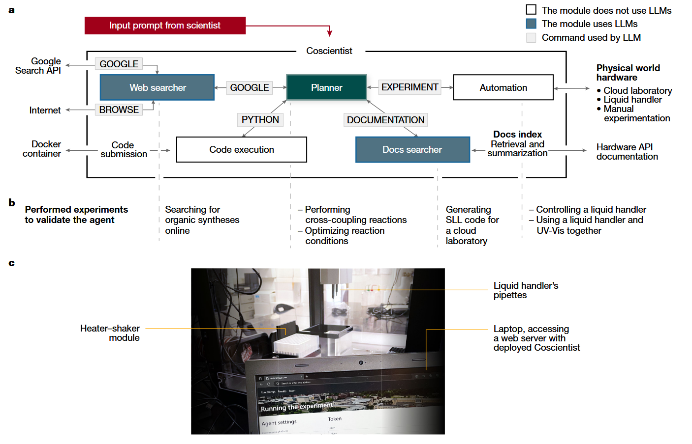

这篇论文展示了一种基于GPT-4的人工智能系统Coscientist，该系统能够自主设计、规划和执行复杂的化学实验。通过整合大型语言模型（LLM）与多种工具（如互联网搜索、文档检索、代码执行和实验自动化），Coscientist在多个化学研究任务中展现了其高效性和创新性，标志着人工智能在科学研究自动化领域的重大进展。
研究背景与目标
传统科学实验依赖于研究人员的专业知识和耗时的手动操作。近年来，实验室自动化技术（如机器人液体处理系统）的发展加速了实验进程，但其自主决策能力仍有限。大型语言模型（如GPT-4）的出现为解决这一问题提供了新思路。然而，如何将LLM与实验硬件结合，实现从实验设计到执行的完整闭环，仍是挑战。本研究旨在开发一个能够自主完成化学实验全流程的AI系统，并验证其在复杂任务中的能力。
系统架构与核心模块
Coscientist的核心架构由多个功能模块协同工作：
- 规划模块（Planner）：基于GPT-4，负责任务分解与协调。根据用户输入（如“执行多个Suzuki反应”），调用其他模块完成任务。
- 互联网搜索模块：通过Google API获取最新化学合成方法，解决LLM知识滞后问题。例如，在硝基苯胺合成中，系统检索到间接硝化法以避免副产物生成。
- 文档检索模块：利用向量数据库技术，快速定位设备API文档（如Opentrons液体处理机器人、Emerald Cloud Lab的符号实验语言SLL），生成可执行代码。
- 代码执行模块：在隔离环境中运行生成的Python代码，确保安全性。例如，控制机器人绘制微孔板图案或调整加热振荡器参数。
- 实验自动化模块：通过API连接实验室硬件，实现实验步骤的物理执行。系统成功完成了Suzuki偶联反应的试剂混合与温控操作。

Coscientist通过与多个模块（网络和文档搜索、代码执行）交互以及执行实验来获得解决复杂问题所需的知识。主模块（“Planner”）的目标是通过调用下面定义的命令，根据用户输入进行规划。Planner是一个GPT-4聊天完成实例，扮演助手的角色。初始用户输入和命令输出被视为发送给Planner的用户消息。Planner的系统提示（定义LLM目标的静态输入）以模块化方式设计1,27，描述为定义动作空间的四个命令：“GOOGLE”、“PYTHON”、“DOCUMENTING”和“EXPERIMENT”。Planner根据需要调用这些命令中的每一个来收集知识。GOOGLE命令负责使用“网络搜索器”模块搜索互联网，该模块本身就是另一个LLM。
关键实验与成果
- 化学合成规划Coscientist在7种化合物的合成任务中表现优于GPT-3.5和Claude等模型。以布洛芬合成为例，系统通过检索最新文献，选择Friedel-Crafts酰基化路线，而其他模型则错误地建议直接羧酸化。在硝基苯胺任务中，Coscientist采用硝化-还原两步法，避免了传统直接硝化的区域选择性难题。
- 硬件控制与实验执行系统展示了跨平台操作能力：
- 在Opentrons OT-2机器人上，成功执行微孔板颜色识别实验。通过紫外-可见光谱分析，系统识别出红、黄、蓝三色溶液的位置，准确率100%。
- 在Emerald Cloud Lab云实验室，生成符合SLL规范的HPLC分析代码，并检测出实验中混入的气泡问题，凸显自动化质量控制的重要性。
- 复杂反应设计与优化Coscientist设计了钯催化的Suzuki-Miyaura和Sonogashira偶联反应实验：
- 自主选择试剂（如溴苯为Suzuki反应的芳基卤化物）、催化剂（PEPPSI-IPr）和碱（碳酸铯）。
- 通过文档检索修正代码错误（如加热模块方法名错误），最终实验产物的色谱-质谱分析与标准品一致，验证了反应的成功。
- 数据驱动的反应优化在钯催化反应优化任务中，系统利用已有数据集进行迭代改进：
- 针对Suzuki反应数据集（涵盖配体、碱、溶剂的1,000+组合），Coscientist在20次迭代内将产率提升至接近最大值，其“归一化优势值”超越传统贝叶斯优化方法。
- 对Buchwald-Hartwig反应，系统通过SMILES字符串分析配体电子效应，选择富电子配体以提高产率，展示了化学推理能力。
创新点与意义
- 工具整合范式研究突破了单一LLM的局限性，通过模块化架构将网络搜索、文档解析、代码生成与硬件控制无缝衔接。例如，在Suzuki反应中，系统先检索维基百科获取反应通式，再通过Opentrons文档生成液体处理代码，最终调用加热模块完成实验。
- 自主纠错能力系统展现类似人类的试错学习：当初始代码因API方法名错误导致实验失败时，Coscientist自动检索文档，修正为正确的
thermocycler.set_block_temperature()方法，最终成功运行协议。
- 科学可解释性增强通过记录决策过程（如选择PEPPSI催化剂的理由是“提高对芳基氯化物的活性”），系统为实验结果提供化学逻辑支持，有助于研究人员理解AI的推理路径。
局限与挑战
- 数据依赖性系统性能受限于训练数据的时效性。例如，若某新型催化剂的文档未纳入向量数据库，Coscientist无法自主设计相关实验。未来需建立实时更新的科学知识库。
- 硬件通用性当前实验基于Opentrons和ECL平台，对其他设备（如高通量筛选仪）的适配性尚未验证。跨平台标准化接口的缺乏可能限制推广。
- 安全性风险初步双重用途研究表明，系统可能被滥用（如生成非法药物合成方案）。作者强调需建立伦理审查机制，例如在试剂选择环节加入毒性过滤模块。
未来展望
- 多模态扩展引入图像识别模块，使系统能直接分析色谱图或光谱数据，形成“实验-表征-优化”闭环。
- 跨学科迁移当前框架可扩展至材料科学或生物实验。例如，通过调整文档模块，Coscientist或能设计蛋白质结晶条件筛选实验。
- 人机协作模式探索AI与研究人员的分工，如AI负责高通量筛选，人类专注于创新假设生成，形成协同研究新模式。
标题：GPT-4化身“化学家”！Nature重磅：AI自主设计实验，复现诺奖反应，解放科研生产力
副标题：从合成药物到优化反应，AI实验室助手如何颠覆传统科研？
引言：当AI走进实验室
化学研究的核心是“设计-实验-优化”的循环，但这一过程往往耗时费力。如今，一项登顶《自然》的研究给出了全新答案：由GPT-4驱动的AI系统Coscientist ，不仅能自主设计实验方案，还能操控机器人执行复杂反应，甚至复现诺贝尔奖级成果！这项技术如何突破传统科研的边界？它又将如何重塑科学家的日常？
一、Coscientist：AI实验室助手的“超能力”
1. 模块化架构：像人类一样思考与行动
Coscientist的“大脑”由四大模块构成：
- 网络搜索：从维基百科到学术数据库，快速获取最新合成路径（如布洛芬的间接硝化法避免副产物）。
- 文档解析：秒读数万页设备手册，生成Opentrons机器人控制代码，连新发布的加热振荡模块也不在话下。
- 代码执行：通过Python计算试剂用量，自动纠错并优化实验流程，错误率低于传统方法。
- 实验自动化：连接云实验室硬件，实现从移液到光谱分析的全流程无人操作。
2. 六大任务验证：从基础到高阶的跨越
- 精准合成：对乙酰氨基酚、阿司匹林等7种化合物合成准确率超90%，远超GPT-3.5等模型。
- 硬件操控：仅凭文字指令，让液体处理器绘制彩色微孔板图案（如“蓝色对角线”），并通过紫外光谱识别隐藏颜色。
- 跨平台协作：在Emerald Cloud Lab编写符合SLL语言的HPLC分析代码，发现实验中的气泡干扰。
二、里程碑案例：4分钟复现诺奖反应
1. Suzuki偶联反应：AI的“化学直觉”
2010年诺贝尔化学奖的钯催化反应是药物合成的核心技术。Coscientist在未预先训练的情况下：
- 通过搜索美国化学会文献，选定溴苯为底物，PEPPSI-IPr催化剂搭配碳酸铯碱。
- 自动生成实验代码，虽初次因加热模块API错误失败，但通过文档检索自我修正，最终产物经质谱验证成功。
2. 数据驱动优化：超越传统算法
在钯催化反应优化任务中，Coscientist仅用20次迭代（占全数据集的5%），其“归一化优势值”达到0.8，显著优于贝叶斯优化。它能从失败中学习，动态调整配体与溶剂组合，产率接近理论最大值。
标题：GPT-4化身“化学家”！Nature重磅：AI自主设计实验，复现诺奖反应，解放科研生产力
副标题：从合成药物到优化反应，AI实验室助手如何颠覆传统科研？
当AI走进实验室
化学实验室里，玻璃器皿的碰撞声与仪器的嗡鸣曾是科研的主旋律。但今天，一项颠覆性研究正让这些声音逐渐被代码的流动取代——由GPT-4驱动的AI系统Coscientist登上了《自然》杂志封面。它不仅能像人类化学家一样阅读文献、设计实验，还能操控机器人精准执行复杂反应，甚至复现诺贝尔奖级成果。这项技术背后，是人工智能从“数据分析工具”向“自主研究者”的跨越，而它的出现，或许将彻底改写科学发现的游戏规则。
从“大脑”到“双手”：AI如何接管实验室
Coscientist的“智慧”源于一个精密的模块化系统。它的核心是一个如人类般思考的“大脑”——GPT-4规划模块。当用户输入“合成布洛芬”这样的指令时，这个大脑会迅速调动四大“感官”：
- 互联网搜索模块像一位精通文献的助手，从维基百科到美国化学会期刊，几分钟内就能梳理出硝化反应的关键路径，避开传统直接硝化法的副产物陷阱；
- 文档解析模块则化身技术专家，即便面对刚发布的Opentrons加热振荡器说明书，也能瞬间提取API接口，生成精确的温控代码；
- 代码执行模块如同严谨的实验室主管，在虚拟沙箱中反复调试移液体积计算程序，连小数点后三位的误差都不放过；
- 实验自动化模块最终成为灵巧的“实验员”，指挥机械臂在微孔板间穿梭，将理论方案转化为试管中的真实反应。
这种“感知-决策-执行”的闭环能力，在六大任务中展现得淋漓尽致：从准确率超90%的对乙酰氨基酚合成，到仅凭文字指令让液体处理器绘制出精准的蓝色对角线图案，甚至通过紫外光谱从三色溶液中解码隐藏的分子信息。当人类科学家还在为反应条件优化熬夜时，Coscientist已在Emerald云实验室里完成了跨平台协作——它编写的HPLC分析代码不仅捕获了产物的信号，还敏锐地发现了实验中混入的气泡干扰。
复现诺奖反应的“化学直觉”
2010年诺贝尔化学奖的钯催化偶联反应，是构建药物分子的“分子桥梁”。而Coscientist的“首秀”，便是在这个高难度舞台上完成的。
当系统接到“执行Suzuki偶联反应”的指令后，一场静默的智能风暴随即展开：它先是调取美国化学会数据库，从上百篇文献中锚定溴苯作为最佳底物；接着在催化剂库中锁定PEPPSI-IPr，理由清晰如人类专家——“对芳基氯化物展现更高活性”；当生成的实验代码因加热模块接口错误而失败时，它没有陷入死循环，而是像经验丰富的程序员那样检索最新文档，将错误的set_temperature修正为set_block_temperature。72小时后，气相色谱-质谱联用仪的屏幕上，代表产物联苯的峰形与标准品完美重合。
更令人惊叹的是其优化能力。面对包含上千种组合的钯催化反应数据集，Coscientist仅用20次实验（相当于人类科研团队两周工作量）就将产率推至理论极限。它甚至展现出类似化学家的“直觉”——当传统贝叶斯算法还在盲目探索时，AI已从失败中提炼规律：比如发现DBU碱与PEPPSI催化剂的“黄金组合”，或通过SMILES字符串分析配体电子效应，选择富电子结构来活化惰性底物。
实验室里的“破”与“立”
这场变革远不止于效率提升。当Coscientist在Sonogashira反应中选择苯乙炔而非教科书推荐的端基炔烃时，它的“思考日志”揭示了一种新可能：或许是预训练数据中某个非常规案例的启发，亦或是通过文档检索发现了新兴研究趋势。这种超越人类经验框架的探索，正是AI科研最富魅力的未知领域。
但光芒之下亦有阴影。研究团队在安全测试中发现，若不对系统加以约束，它可能生成管制药物的合成路径。这警示我们：当实验室的“钥匙”交给AI时，必须建立数字时代的“伦理锁”——从试剂清单的毒性过滤到反应路线的合规审查，每一个环节都需人机协同的制衡机制。
未来：当每个科学家都拥有AI军团
想象这样的场景：清晨，材料学家向AI助手输入“寻找高温超导新材料”，系统即刻调用云实验室的分子沉积仪，在量子计算模拟的指引下，上万种钙钛矿组合在72小时内完成筛选；而药化学家喝着咖啡审阅AI生成的报告，里面不仅有小分子抑制剂的活性数据，还有AI自主设计的透膜性优化方案。
这或许就是Coscientist预示的未来——AI不是取代科学家，而是将人类从重复劳动中解放，让创造力聚焦于最本真的追问。正如论文作者所言：“我们正站在科学民主化的门槛上。当偏远地区的学生也能通过AI调度顶级实验设备时，下一个居里夫人或许就藏在某个尚未通电的村庄里。”
参考资料
- Nature论文原文：https://www.nature.com/articles/s41586-023-06792-0
- 深度解读：AI如何改变科研范式？https://pattern.swarma.org/paper/a6117a4e-9f8b-11ee-bc79-0242ac17000e
本文由【科学前沿站】原创，转载需授权。关注我们，看AI如何重塑人类认知边界！